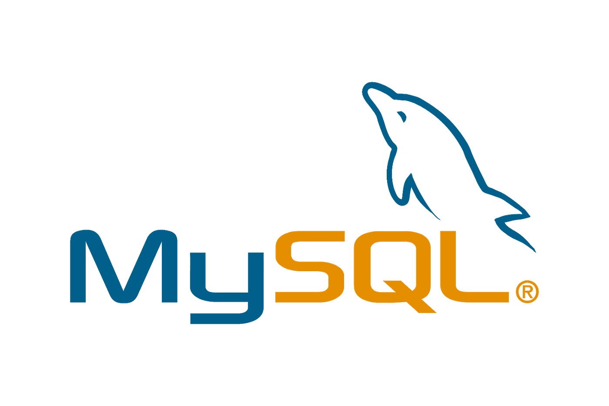

MySQL Workbench
Datenbanken sind heute sehr wichtig, weil sie grosse Mengen an Daten speichern und ordnen können. Viele Programme und Webseiten greifen auf Datenbanken zu, um Informationen schnell abzurufen. Ein bekanntes Datenbanksystem ist MySQL. Um leichter mit MySQL arbeiten zu können, wird oft das Programm MySQL Workbench verwendet. Es bietet eine grafische Oberfläche und erleichtert die Arbeit mit Datenbanken. In diesem Artikel wird erklärt, was MySQL ist und wie MySQL Workbench funktioniert.
Was ist MySQL Workbench?
MySQL ist ein relationales Datenbankmanagementsystem und wurde im Jahr 1995 entwickelt. Es stammt von der schwedischen Firma MySQL ab. Zu den wichtigsten Gründern gehören Michael „Monty“ Widenius und David Axmark. MySQL ist Open Source, das bedeutet, dass der Quellcode öffentlich ist und von vielen Entwicklern genutzt und verbessert werden kann. Im Jahr 2008 wurde MySQL von Sun Microsystems übernommen, später dann von Oracle. Trotz dieser Übernahmen ist MySQL weiterhin eines der meistverwendeten Datenbanksysteme weltweit. MySQL nutzt die Abfragesprache SQL, was für „Structured Query Language“ steht. Mit SQL können Daten gespeichert, geändert und abgefragt werden. MySQL wird vor allem bei Webseiten, Webanwendungen und in Unternehmen eingesetzt.
Wie funktioniert MySQL Workbench?
MySQL Workbench ist ein grafisches Programm zur Verwaltung von MySQL-Datenbanken. Es verbindet sich mit einem MySQL-Server und ermöglicht es, Datenbanken über eine übersichtliche Benutzeroberfläche zu steuern. Dadurch wird die Arbeit deutlich einfacher, besonders für Einsteiger. Mit MySQL Workbench können Datenbanken und Tabellen erstellt werden. Ausserdem lassen sich SQL-Befehle schreiben und direkt ausführen. Ein weiterer Vorteil ist die grafische Darstellung von Datenbankstrukturen in Form von Diagrammen. Zusätzlich bietet das Programm Funktionen zur Benutzerverwaltung sowie zur Sicherung und Wiederherstellung von Datenbanken.
Fazit
MySQL Workbench ist ein hilfreiches und leicht verständliches Werkzeug für die Arbeit mit MySQL-Datenbanken. Es vereinfacht viele Aufgaben und bietet eine gute Übersicht über Daten und Strukturen. Durch die einfache Bedienung und den grossen Funktionsumfang ist MySQL Workbench sowohl für Anfänger als auch für erfahrene Nutzer gut geeignet.